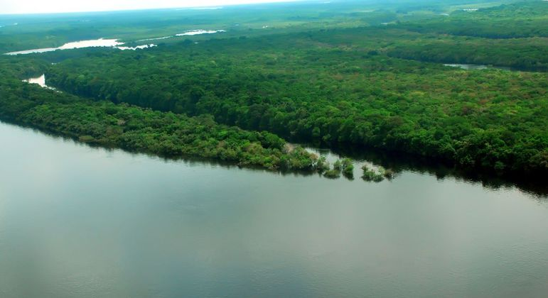
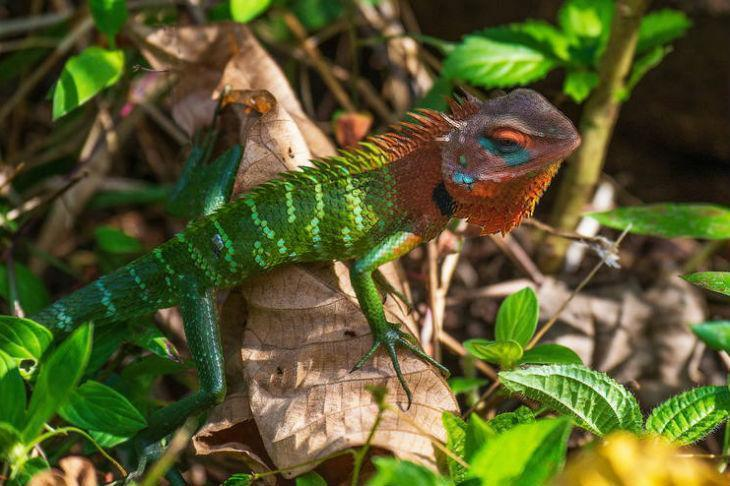
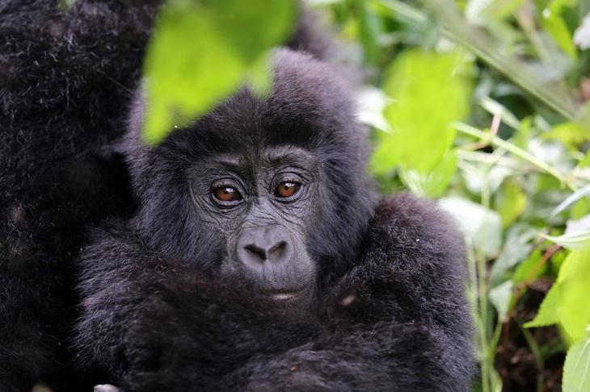
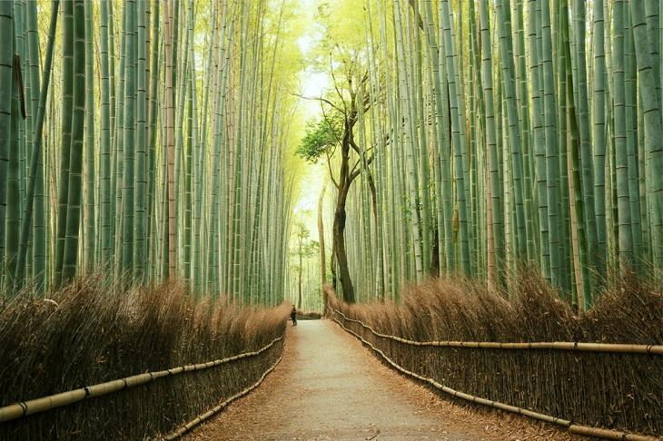
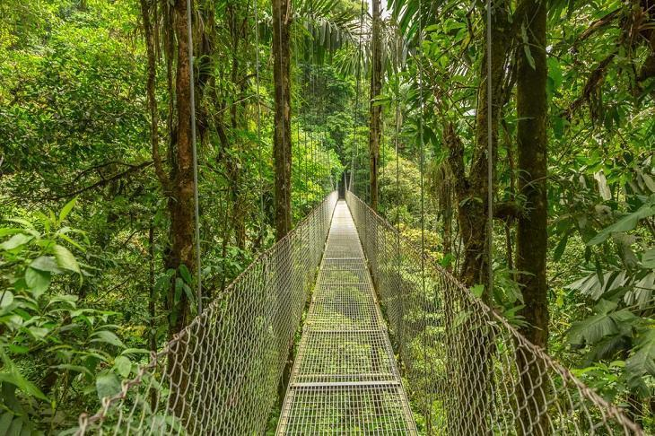
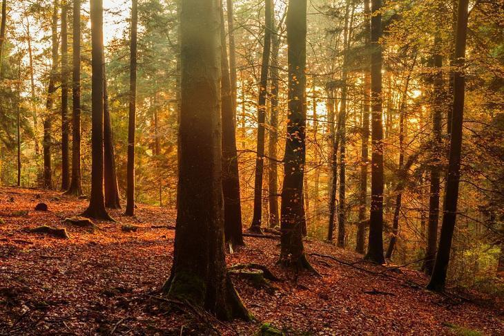

1
Floresta Tropical Amazônica
A floresta tropical amazônica, que cobre boa parte do noroeste do Brasil e se estende até a Colômbia,
o Peru e outros países da América do Sul, é a maior floresta tropical do mundo, famosa por sua biodiversidade.
Ela é atravessada por milhares de rios, entre eles o grandioso rio Amazonas. Entre as cidades ribeirinhas, com
arquitetura do século XIX que data do início da exploração de borracha, destacam-se Manaus e Belém, no Brasil,
e Iquitos e Puerto Maldonado, no Peru.
amazónia, Peru

2
Reserva Florestal Sinharaja, Sri Lanka
A Sinharaja é uma das mais importantes florestas tropicais do Sri Lanka,
que tem 88,64 km² e foi declarada pela UNESCO como uma reserva de biosfera em 1978.
Ela conta com uma enorme quantidade de árvores endêmicas, é considerada o lar de animais como mamíferos,
insetos raros, pássaros e borboletas e ainda abriga por lá outras espécies ameaçadas de extinção.
Reserva Florestal Sinharaja

3
Floresta Impenetrável de Bwindi, Uganda
A Floresta Impenetrável de Bwindi é tombada como Patrimônio
Mundial da UNESCO e conta com 32 mil hectares, uma área de preservação que
é responsável por abrigar uma das espécies em extinção mais incríveis do mundo,
o gorila da montanha, que convive junto com chipanzés, elefantes e antílopes.
Além disso, são mais de 200 espécies de árvores e também uma grande quantidade de pássaros e borboletas.
Bwindi, Uganda

4
Floresta Arashiyama, Japão
Que tal visitar uma floresta de bambu situada em Kyoto, no Japão?
Trata-se da Arashiyama, que é popular não apenas pelo seu famoso passeio no Comboio Romântico de Sagano,
como também pela sua ponte Togetsukyo, presente em muitas fotos de promoção turística da região.
Arashiyama, Japão

5
Reserva Florestal Biológica Nube Monteverde, Costa Rica
Essa é uma floresta tropical considerada um dos principais pontos turísticos da Costa Rica,
que fica situada em Monteverde. Além de contar com a maior quantidade de espécies de orquídeas no mundo e outras milhares de plantas,
por lá encontram-se também cerca de 30 espécies de beija-flor, 500 espécies de borboletas, 400 espécies de pássaros e ainda mais de 100 espécies de mamíferos.
Nube Monteverde, Costa Rica

6
Floresta Baden-Württemberg, Alemanha
Essa imensa floresta alemã, também conhecida como a Floresta Negra, é cortada pelo Vale do Reno e considerada o maior parque natural do país,
com 200 km de comprimento e 60 km de largura.
Por lá, é possível fazer diversas trilhas entre suas árvores e também passar pelas lindas flores amarelas,
que trazem beleza e vida ao local escuro e enigmático, que já serviu de inspiração para contos famosos dos irmãos Grimm.
Se estiver de passagem pela região, a floresta é com certeza uma das paradas obrigatórias!
Baden-Württemberg, Alemanha